HEART FAILURE
By C.M GARAMA
Objectives
- Brief definition
- Etiology
- Types of HF
HEART FAILURE
Definition:
It's the pathophysiologic state in which impaired cardiac function is unable to maintain an adequate circulation for the metabolic needs of the tissues of the body, which may be acute or chronic.
The term congestive heart failure (CHF) is used for the chronic form of heart failure in which the patient has evidence of congestion of peripheral circulation and of lungs.
CONGESTION
AETIOLOGY AND MECHANISMS
Heart failure may be caused by one or in combination of the following factors,
- INTRINSIC PUMP FAILURE
- INCREASED WORKLOAD ONTHE HEART
- IMPAIRED FILLING OF CARDIAC CHAMBERS.
1. INTRINSIC PUMP FAILURE
weakening of the ventricular muscle due to disease so that the heart fails to act as an efficient pump is the most common and most important cause of heart failure
Diseases responsible for this are;-
- Ischaemic heart disease
- Myocarditis
- Cardiomyopathies
- Metabolic disorders e.g. beriberi
- Disorders of the rhythm e.g. atrial fibrillation and flutt
Ischaemic heart disease
Ischemic heart disease develops when cholesterol particles in the blood begin to accumulate on the walls of the arteries that supply blood to the heart. Eventually, deposits called plaques may form.
These deposits narrow the arteries and eventually block the flow of blood.
This decrease in blood flow reduces the amount of oxygen supplied to the heart muscle.
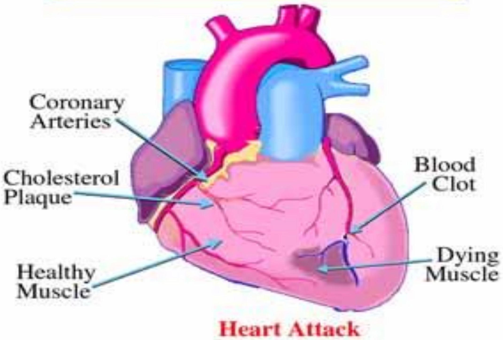Myocarditis
Refers to an inflammatory response within the myocardium that is not secondary to ischemic events or cardiac rejection in the setting of transplantation
The presence of myocyte necrosis triggered by viruses and augmented by autoimmunity is believed to be behind the whole process
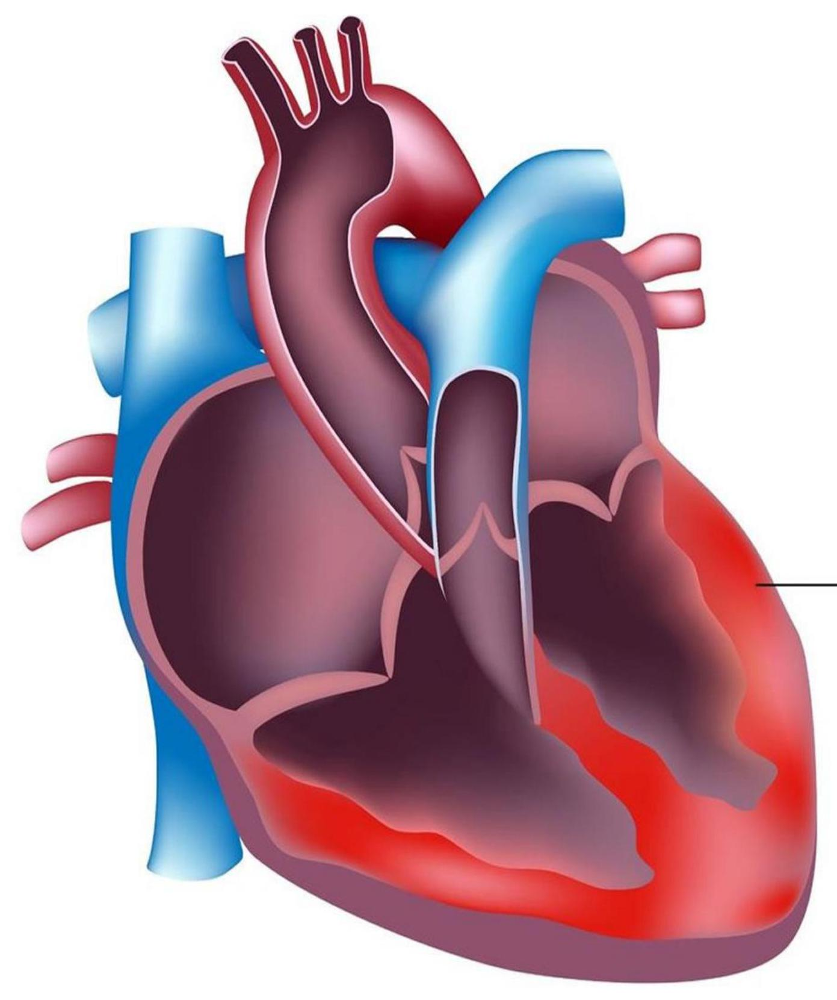Inflammation of heart muscle
Cardiomyopathies
any structural or functional disease of heart muscle that is marked especially by enlargement of the heart, by hypertrophy of cardiac muscle, or by rigidity and loss of flexibility of the heart walls and that may be idiopathic or attributable to a specific cause (such as heart valve disease, untreated high blood pressure, or viral infection
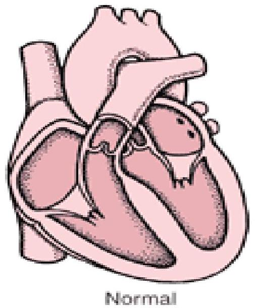Types of Cardiomyopathy
There are three main types of cardiomyopathydilated, hypertrophic, and restrictive. In dilated cardiomyopathy, the ventricles enlarge. In hypertrophic cardiomyopathy, the walls of the ventricles thicken and become stiff. In restrictive cardiomyopathy, the walls of the ventricles become stiff, but not necessarily thickened.
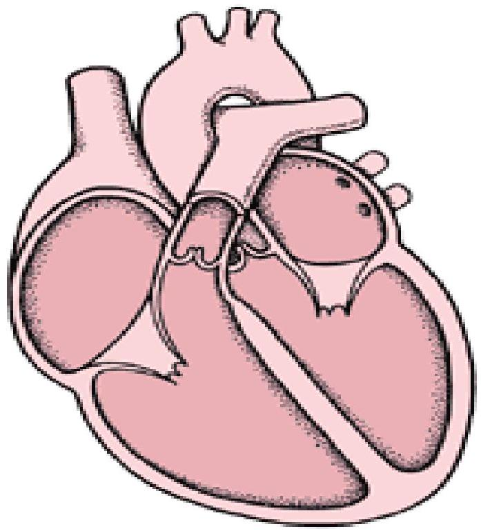 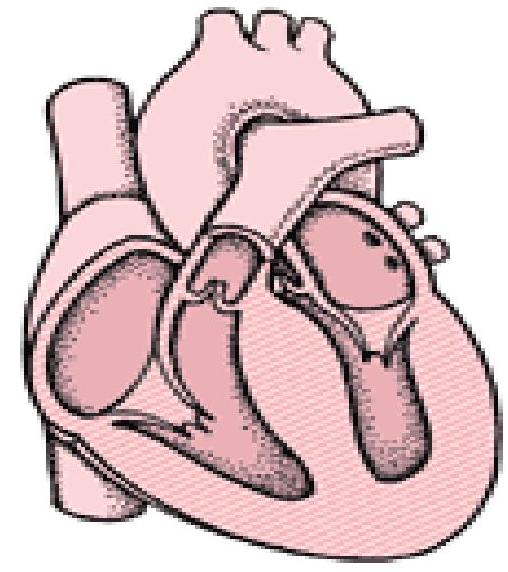 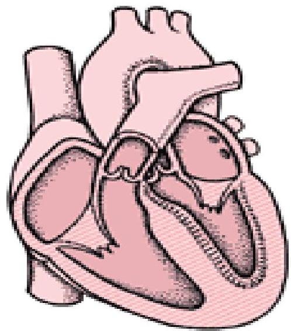2. INCREASED WORKLOAD ON THE HEART.
Increased mechanical load on the heart results in increased myocardial demand resulting in myocardial failure.
Increased load on the heart may be in the form of
- Increased pressure load
- Increased volume load
Increased pressure load
Due to:
- a) Systemic and pulmonary arterial hypertension.
- b) Valvular disease e.g. mitral stenosis, aortic stenosis,
- c) pulmonary stenosis.
- d) Chronic lung diseases
Increased volume load
occurs when a ventricle is required to eject more than normal volume of the blood resulting in cardiac failure
Maybe seen in:
- a) Valvular insufficiency
- b) Severe anaemia
- c) Thyrotoxicosis
- d) Arteriovenous shunts
- e) Hypoxia due to lung diseases.
3. IMPAIRED FILLING OF CARDIAC CHAMBERS
Decreased cardiac output and cardiac failure may result from extra-cardiac causes or defect in filling of the heart:
- a) Cardiac tamponade e.g.
- a) haemopericardium,
- b) hydropericardium
- b) Constrictive pericarditis.
Cardiac tamponade
Cardiac tamponade, also known as pericardial tamponade, is when fluid in the pericardium (the sac around the heart) builds up, resulting in compression of the heart
Common causes of cardiac tamponade include cancer, kidney failure, chest trauma, myocardial infarction, and pericarditis
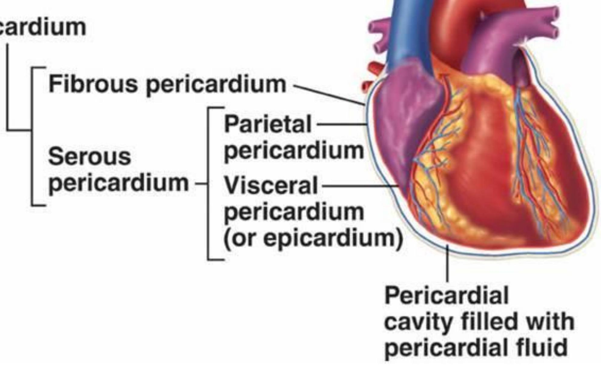 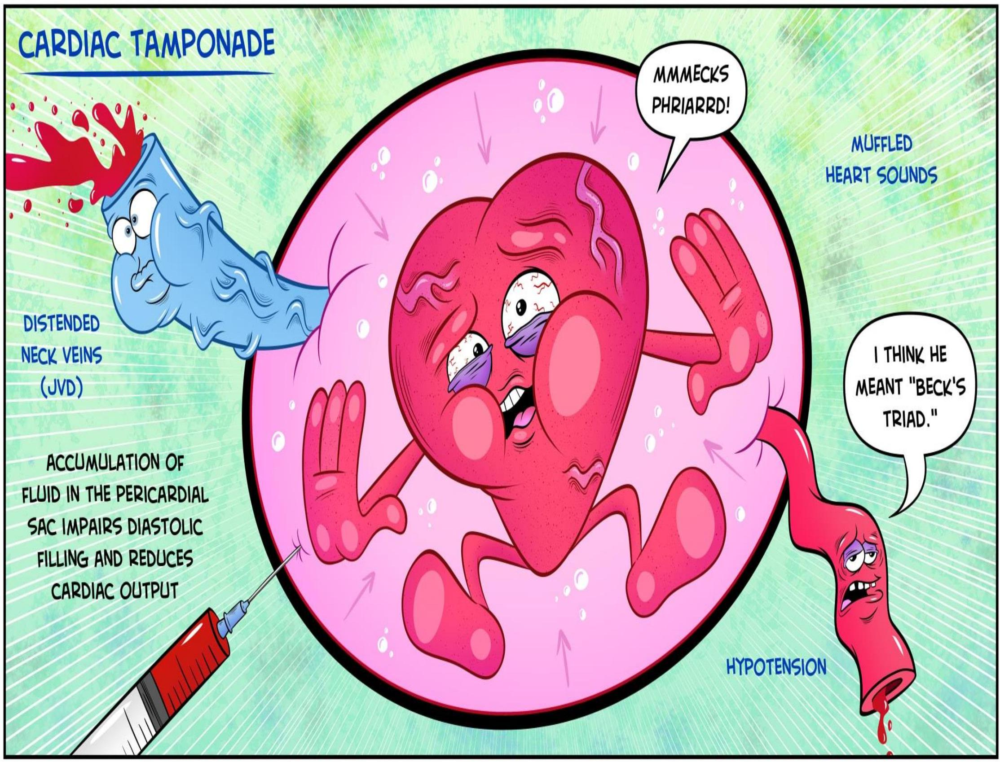Constrictive pericarditis.
Constrictive pericarditis occurs when the pericardium (a thin tissue sac that surrounds the heart) becomes thickened and scarred.
This can make it difficult for the heart to expand with blood.
TYPES OF HEART FAILURE
- ACUTE OR CHRONIC,
- RIGHT-SIDED OR LEFTSIDED
- FORWARD OR BACKWARD FAILURE.
ACUTE AND CHRONIC HEART FAILURE.
1) Acute heart failure.
Sudden and rapid development of heart failure occurs in the following conditions:
- i. Larger myocardial infarction
- ii. Valve rupture
- iii. Cardiac tamponade
- iv. Massive pulmonary embolism
- v. Acute viral myocarditis
- vi. Acute bacterial toxaemia
In acute heart failure, there is sudden reduction in cardiac output resulting in systemic hypotension but oedema does not occur.
Instead, a state of cardiogenic shock and cerebral hypoxia develops.
2) Chronic heart failure.
More often, heart failure develops slowly compensatory mechanisms like tachycardia, cardiac dilatation and cardiac hypertrophy try to make adjustments so as to maintain adequate cardiac output.
This often results in well-maintained arterial pressure and there is accumulation of oedema
Observed in;
- I. Myocardial ischaemia from atherosclerotic coronary artery disease
- II. Multivalvular heart disease
- III. Systemic arterial hypertension
- IV. Chronic lung diseases resulting in hypoxia and pulmonary arterial hypertension
- V. Progression of acute into chronic failure
LEFT-SIDED AND RIGHT-SIDED HEART FAILURE.
1) Left-sided heart failure
Functionally, the left and right heart act as independent units
Left sided heart failure is initiated by stress to the left heart.
The major causes are as follows:
- Systemic hypertension
- Mitral or aortic valve disease (stenosis)
- Ischaemic heart disease
- Myocardial diseases e.g. cardiomyopathies, myocarditis.
- Restrictive pericarditis
The clinical manifestations of left-sided heart failure result from decreased left ventricular output and hence there is accumulation of fluid upstream in the lungs
Accordingly, the major pathologic changes are as under:
- i) Pulmonary congestion and oedema causes dyspnoea and orthopnoea.
- ii) Decreased left ventricular output causing hypoperfusion and diminished oxygenation of tissues e.g.
- a) Kidneys- causing ischaemic acute tubular necrosis,
- b) Brain causing hypoxic encephalopathy,
- c) Skeletal muscles causing muscular weakness and fatigue.
Pulmonary Edema causes Dyspnea:
- Initially, DOE.
- then PND.
- Then dyspnea at rest.
- Caused by...LV failure.
2) Right-sided heart failure
Right-sided heart failure occurs more often as a consequence of left-sided heart failure.
However, some conditions affect the right ventricle primarily, producing right-sided heart failure. These are as follows:
- As a consequence of left ventricular failure.
- Cor pulmonale in which right heart failure occurs due to intrinsic lung diseases.
- Pulmonary or tricuspid valvular disease.
- Pulmonary hypertension secondary to pulmonary thromboembolism.
- Myocardial disease affecting right heart.
- Congenital heart disease with left-to-right shunt.
Whatever be the underlying cause, the clinical manifestations of right-sided heart failure are upstream of the right heart such as systemic (due to caval blood) and Portal venous congestion, and reduced cardiac output
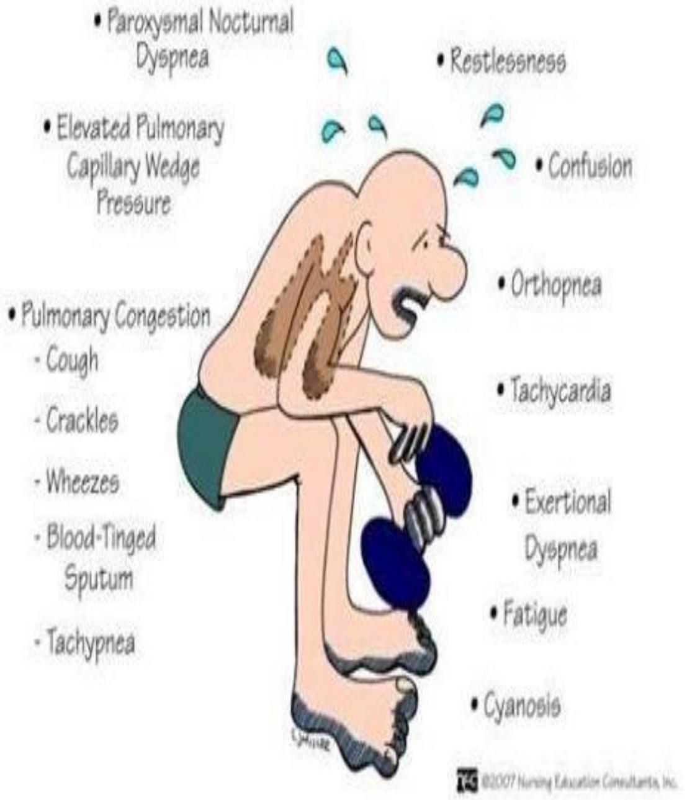
Accordingly, the pathologic changes are as under:
- i) Systemic venous congestion in different tissues and organs e.g. subcutaneous oedema on dependent parts, passive congestion of the liver, spleen, and kidneys, ascites, hydrothorax, congestion of leg veins and neck veins.
- ii) Reduced cardiac output resulting in circulatory stagnation causing anoxia, cyanosis and coldness of extremities.
In summary, in early stage the left heart failure manifests with features of pulmonary congestion and decreased left ventricular output, while the right heart failure presents with systemic venous congestion and involvement of the liver and spleen. CHF, however, combines the features of both left and right heart failure.
BACKWARD AND FORWARD HEART FAILURE.
The mechanism of clinical manifestations resulting from heart failure can be explained on the basis of mutually interdependent backward and forward failure.
Backward heart failure: According to this concept, either of the ventricles fails to eject blood normally, resulting in rise of end-diastolic volume in the ventricle and increase in volume and pressure in the atrium which is transmitted Backward producing elevated pressure in the veins.
Forward heart failure: According to this hypothesis, clinical manifestations result directly from failure of the heart to pump blood causing diminished flow of blood to the tissues, especially diminished renal perfusion and activation of renin-angiotensin- aldosterone system.
COMPENSATORY MECHANISMS
CARDIAC HYPERTROPHY AND DILATATION:
In order to maintain normal cardiac output, several compensatory mechanisms play a role as under:
- Compensatory enlargement in the form of cardiac hypertrophy, cardiac dilatation, or both.
- Tachycardia(i.e. increased heart rate) due to activation of neuro-humoral system e.g. release of norepinephrine and atrial natriuretic peptide, activation of renin-angiotensin aldosterone mechanism.
According to Starling's law on pathophysiology of heart, the failing dilated heart, in order to maintain cardiac performance, increases the myocardial contractility and thereby attempts to maintain stroke volume. This is achieved by increasing the length of sarcomeres in dilated heart. Ultimately, however, dilatation decreases the force of contraction and leads to residual volume in the cardiac chambers causing volume overload resulting in cardiac failure that ends in death.
Cardiac Hypertrophy:
Hypertrophy of the heart is defined as an increase in size and weight of the myocardium.
It generally results from increased pressure load while increased volume load (e.g. valvular incompetence) results in hypertrophy with dilatation of the affected chamber due to regurgitation of the blood through incompetent valve.
The atria may also undergo compensatory changes due to increased workload.
The basic factors that stimulate the hypertrophy of the myocardial fibres are not known. It appears that stretching of myocardial fibres in response to stress induces the cells to increase in length.
The elongated fibres receive better nutrition and thus increase in size. Other factors which may stimulate increase in size of myocardial fibres are anoxia (e.g. in coronary atherosclerosis) and influence of certain hormones (e.g. catecholamines, pituitary growth hormone).
CAUSES.
Hypertrophy with or without dilatation may involve predominantly the left or the right heart, or both sides.
Left ventricular hypertrophy
The common causes are as under:
- i) Systemic hypertension
- ii) Aortic stenosis and insufficiency
- iii) Mitral insufficiency
- iv) Coarctation of the aorta
- v) Occlusive coronary artery disease
- vi) Congenital anomalies like septal defects and patent ductus arteriosus
- vii) Conditions with increased cardiac output e.g. thyrotoxicosis, anaemia, arteriovenous fistulae.
Right ventricular hypertrophy
Most of the causes of right ventricular hypertrophy are due to pulmonary arterial hypertension. These are as follows:
- i) Pulmonary stenosis and insufficiency
- ii) Tricuspid insufficiency
- iii) Mitral stenosis and/or insufficiency
- iv) Chronic lung diseases e.g. chronic emphysema, bronchiectasis, pneumoconiosis, pulmonary vascular disease etc.
- v) Left ventricular hypertrophy and failure of the left ventricle.
Cardiac Dilatation
Quite often, hypertrophy of the heart is accompanied by cardiac dilatation. Stress leading to accumulation of excessive volume of blood in a chamber of the heart causes increase in length of myocardial fibres and hence cardiac dilatation as a compensatory mechanism.
CAUSES.
Accumulation of excessive volume of blood within the cardiac chambers from the following causes may result in dilatation of the respective ventricles or both:
- i) Valvular insufficiency (mitral and/or aortic insufficiency in left ventricular dilatation, tricuspid and/or pulmonary insufficiency in right ventricular dilatation)
- ii) Left-to-right shunts e.g. in VSD
- iii) Conditions with high cardiac output e.g. thyrotoxicosis, arteriovenous shunt
- iv) Myocardial diseases e.g. cardiomyopathies, myocarditis
- v) Systemic hypertension.
MORPHOLOGIC FEATURES.
Hypertrophy of the myocardium without dilatation is referred to as concentric and when associated with dilatation is called eccentric The weight of the heart is increased above normal, often over 500 gm. However, excessive epicardial fat is not indicative of true hypertrophy.
Grossly: Thickness of the left ventricular wall (excluding trabeculae carneae and papillary muscles) above 15 mm is indicative of significant hypertrophy. In concentric hypertrophy, the lumen of the chamber is smaller than usual, while in eccentric hypertrophy the lumen is dilated. In pure hypertrophy, the papillary muscles and trabeculae carneae are rounded and enlarged, while in hypertrophy with dilatation these are flattened.
Microscopically: there is increase in size of individual muscle fibres. There may be multiple minute foci of degenerative changes and necrosis in the hypertrophied myocardium. These changes appear to arise as a result of relative hypoxia of the hypertrophied muscle as the blood supply is inadequate to meet the demands of the increased fibre size. Ventricular hypertrophy renders the inner part of the myocardium more liable to ischaemia.
Electron microscopy reveals increase in the number of myofilaments comprising myofibrils, mitochondrial changes and multiple intercalated discs which are active sites for the formation of new sarcomeres. Besides, the nucleic acid content determinations have shown increase in total RNA and increased ratio of RNA to DNA content of the hypertrophied myocardial fibres.
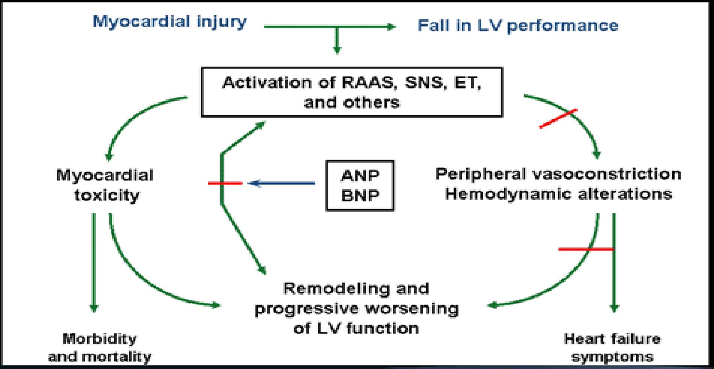 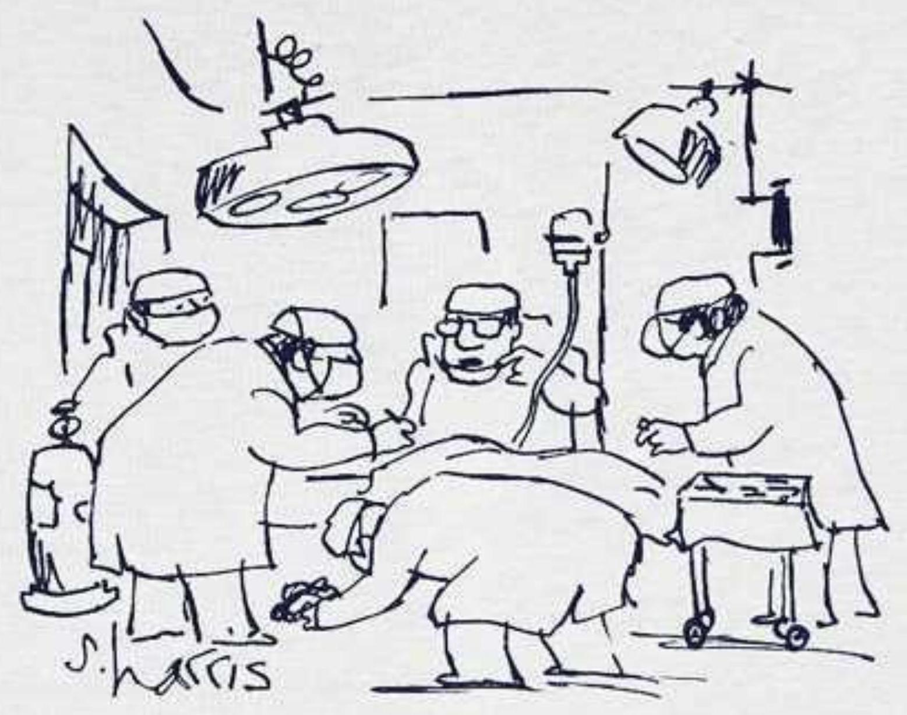REFERENCES
- Harsh Mohan Textbook of Pathology, $6^{\text {th }}$ Ed.